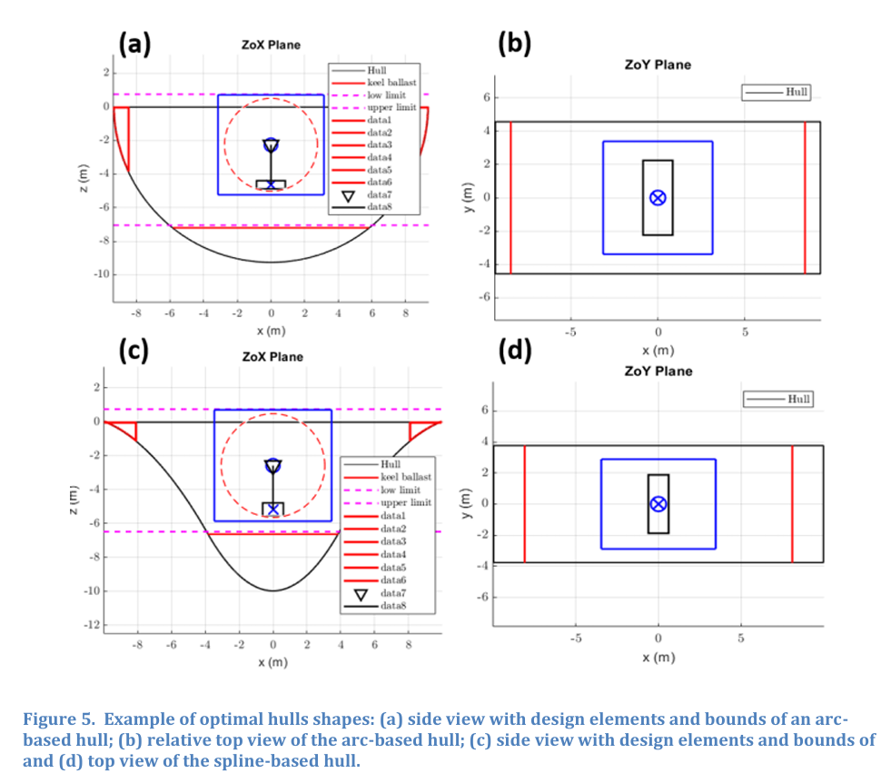
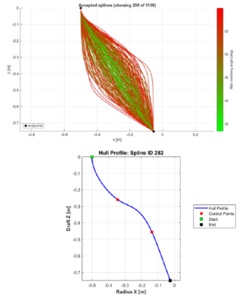
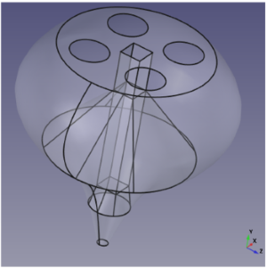
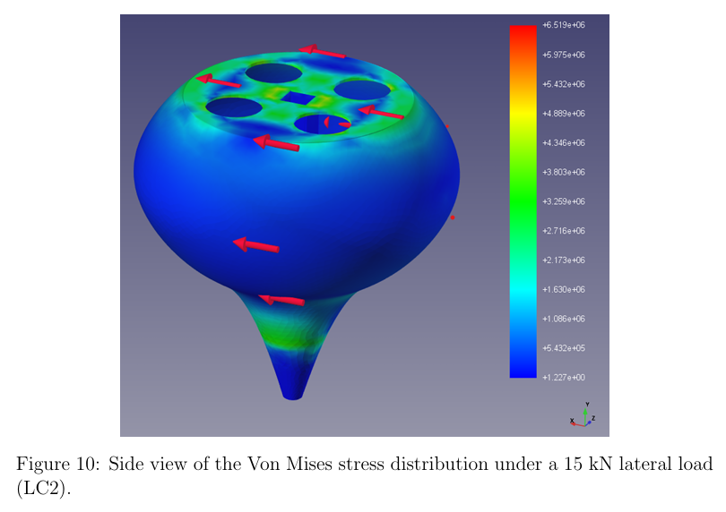
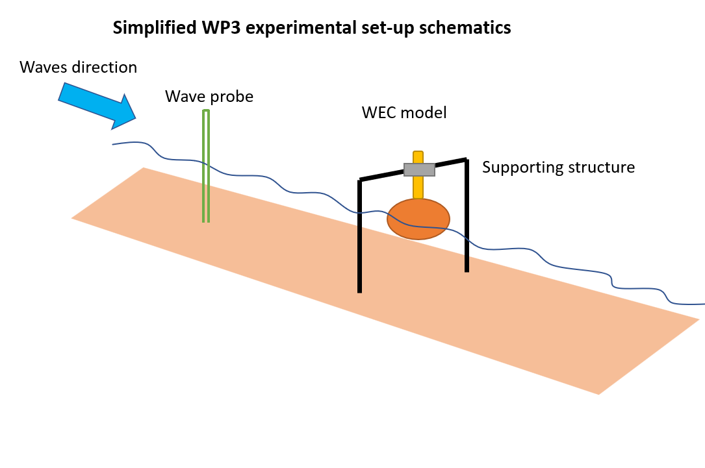
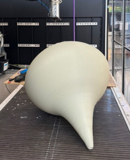

<!DOCTYPE html>
<html lang="en">
<head>
  <meta charset="UTF-8">
  <meta name="viewport" content="width=device-width, initial-scale=1.0">
  <title>Work Packages – WEC-Pro</title>

  <!-- Tailwind CSS required for nav.js styling -->
  <script src="https://cdn.tailwindcss.com"></script>
  <script>
    tailwind.config = {
      theme: {
        extend: { colors: { primary: { 600: "#003399", 700: "#003399" } } },
      },
    };
  </script>

  <style>
    body {
      font-family: Arial, sans-serif;
      background-color: #f4f4f9;
      color: #333;
      margin: 0;
      padding: 0;
    }
    
    .content-container {
      max-width: 900px;
      margin: 40px auto;
      padding: 30px;
      background-color: #fff;
      box-shadow: 0 0 10px rgba(0,0,0,0.1);
      border-radius: 8px;
    }
    h1.page-title {
      font-size: 2em;
      color: #0f172a; /* slate-900 */
      margin-bottom: 20px;
      text-align: center;
    }
    h2.wp-title {
      font-size: 1.5em;
      color: #003399;
      margin-top: 10px;
      margin-bottom: 15px;
      border-bottom: 2px solid #e2e8f0;
      padding-bottom: 8px;
    }
    p.page-text {
      font-size: 1.1em;
      line-height: 1.6;
      margin-bottom: 18px;
    }
    .wp-section {
      margin-top: 40px;
      padding-top: 10px;
    }
    .highlight-box {
      background-color: #f8fafc;
      border-left: 4px solid #003399;
      padding: 15px 20px;
      margin: 20px 0;
      border-radius: 0 6px 6px 0;
    }
    .highlight-box ul {
      margin: 8px 0 0 20px;
      list-style-type: disc;
    }
    .highlight-box li {
      margin-bottom: 6px;
      line-height: 1.5;
    }
    .figure-grid {
      display: grid;
      grid-template-columns: repeat(auto-fit, minmax(280px, 1fr));
      gap: 20px;
      margin: 25px 0;
      align-items: start;
    }
    figure.report-figure {
      text-align: center;
      margin: 0;
      background: #fafafa;
      padding: 12px;
      border-radius: 8px;
      border: 1px solid #e2e8f0;
    }
    figure.report-figure img {
      max-width: 100%;
      height: auto;
      margin: 0 auto;
      border-radius: 6px;
      box-shadow: 0 2px 8px rgba(0,0,0,0.08);
    }
    figure.report-figure figcaption {
      font-size: 0.9em;
      color: #64748b;
      margin-top: 10px;
      font-style: italic;
      line-height: 1.4;
    }
    
    /* Slight blur under sticky header from your index.html */
    .header-blur { background: rgba(255,255,255,0.9); backdrop-filter: saturate(120%) blur(6px); }
  </style>
</head>
<body class="min-h-screen flex flex-col">
  
  <div id="root"></div>

  <!-- React & Babel requirements for the nav component -->
  <script crossorigin src="https://unpkg.com/react@18/umd/react.development.js"></script>
  <script crossorigin src="https://unpkg.com/react-dom@18/umd/react-dom.development.js"></script>
  <script src="https://unpkg.com/@babel/standalone/babel.min.js"></script>
  
  <!-- External Nav Component -->
  <script src="nav.js"></script>

  <script type="text/babel">
    function App() {
      return (
        <div className="min-h-screen flex flex-col">
          {/* Nav Component */}
          <SiteHeader />

          {/* Main Content */}
          <main className="flex-1">
            <div className="content-container">
              <h1 className="page-title">Scientific Work Packages</h1>
              
              <p className="page-text">
                To make wave energy competitive and scalable, the WEC-Pro project rethinks how Wave Energy Converters (WECs) are designed, engineered, and built. By combining advanced computer simulations with Large-Format Additive Manufacturing (LFAM)—industrial-scale 3D printing—we can create complex, highly efficient floating devices at a fraction of traditional manufacturing costs.
              </p>

              <p className="page-text">
                The technical research of WEC-Pro is structured into three interconnected scientific Work Packages (WPs), taking WECs all the way from digital shape optimization to real-world wave testing:
              </p>

              {/* ================= WP1 ================= */}
              <section className="wp-section">
                <h2 className="wp-title">
                  WP1 - Wave energy converter design for power absorption: optimizing outer geometry
                </h2>
                
                <p className="page-text">
                  The initial phase in designing an efficient Wave Energy Converter (WEC) focuses on optimizing its outer hull and internal componets paramters to maximize energy extraction from incident ocean waves. Traditional manufacturing techniques impose severe geometric limitations, often restricting designs to simplified primitive shapes. To overcome this, WP1 develops advanced numerical models coupled with optimization algorithms (such as genetic and stocastic) to explore complex, high-efficiency hull and system profiles. Utilizing the open-source Boundary Element Method (BEM) solver Nemoh, the potential flow mathematical model resolves hydrodynamic interactions with high computational efficiency. A robust framework is developed to enable the assessment of many system configurations and environmental conditions within a feasible timeframe.
                </p>

                <p className="page-text">
                  The numerical model and optimization rutines actively incorporates manufacturing constraints directly into the computational loop. Real physical WEC components with realistic physical limits are also incorporated into the model, ensuring that critical parameters such as maximum build volumes and overhang angles are strictly maintained. This guarantees that every high-performing hydrodynamic shape generated by the model is physically viable for LFAM fabrication.
                </p>

                <div className="highlight-box">
                  <strong>Latest Key Achievements in WP1:</strong>
                  <ul>
                    <li>
                      <strong>Genetic Algorithm Optimization:</strong> Implemented multi-parametric optimization utilizing genetic algorithms that mimic biological evolution. This strategy effectively minimized hydrodynamic losses and enhanced theoretical Annual Energy Production (AEP) metrics.
                    </li>
                    <li>
                      <strong>Hydrodynamic Modeling with Realistic Limits:</strong> Leveraged the computational efficiency of the BEM solver to evaluate extensive geometric variations across recurrent sea states. All designs are rigorously filtered through explicit LFAM manufacturing constraints to secure printability.
                    </li>
                  </ul>
                </div>

                <div className="figure-grid">
                  <figure className="report-figure">
                    
                    <figcaption>
                      Transitioning from traditional primitive geometries to spline-parameterized profiles yields superior hydrodynamic efficiency and optimizes incident power absorption.
                    </figcaption>
                  </figure>

                  <figure className="report-figure">
                    
                    <figcaption>
                      Generated buoy profiles rigorously filtered through explicit LFAM manufacturing constraints prior to hydrodynamic evaluation.
                    </figcaption>
                  </figure>
                </div>
              </section>

              {/* ================= WP2 ================= */}
              <section className="wp-section">
                <h2 className="wp-title">
                  WP2 - Structural toolbox for LSAM incorporation: optimizing internal structure
                </h2>
                
                <p className="page-text">
                  A critical challenge in WEC design is ensuring the structural integrity of the floating body while minimizing material usage and manufacturing costs. WP2 builds upon the optimized hydrodynamic envelopes from WP1 by establishing a robust, open-source LFAM Structural Toolbox for internal architecture engineering. The exceptional capability of LFAM to manufacture highly advanced, non-standard geometries provides unprecedented flexibility for internal structural design.
                </p>

                <p className="page-text">
                  To achieve structural efficiency, topology optimization is systematically performed. This computational approach selectively removes and adds material, identifying the precise internal structural layout that maximizes load-bearing capacity while minimizing raw material consumption. While an isotropic structural assessment framework was successfully implemented initially, an advanced anisotropic assessment methodology utilizing open-source tools is planned to accurately capture the specific mechanical properties of LFAM-printed composites. Concurrently, a dedicated CAD-to-LFAM adaptation framework was formulated to seamlessly translate complex digital models into physical extrusion paths.
                </p>

                <div className="highlight-box">
                  <strong>Latest Key Achievements in WP2:</strong>
                  <ul>
                    <li>
                      <strong>Topology Optimization & CAD Framework:</strong> Deployed structural algorithms targeting volume reduction and optimal material distribution to ensure robust reliability. This is further supported by a comprehensive CAD adaptation framework engineered specifically for LFAM capabilities.
                    </li>
                    <li>
                      <strong>Comprehensive Material Assessment:</strong> Progressing from baseline isotropic structural models to advanced anisotropic assessments, utilizing open-source numerical tools to comprehensively evaluate the mechanical integrity of the composite layers.
                    </li>
                    <li>
                      <strong>Strategic R&I Agenda:</strong> Developed a structured agenda reviewing the primary scientific and technical challenges of applying LFAM within the marine environment. The framework proposes concrete engineering pathways and viable solutions for resilient WEC manufacturing.
                    </li>
                  </ul>
                </div>

                <div className="figure-grid">
                  <figure className="report-figure">
                    
                    <figcaption>
                      CAD configuration detailing the optimized internal topology, engineered to minimize material volume while fully satisfying complex structural load requirements.
                    </figcaption>
                  </figure>

                  <figure className="report-figure">
                    
                    <figcaption>
                      Finite Element Analysis (FEA) validating the structural resilience of the optimized LFAM composite shell under simulated extreme wave loading.
                    </figcaption>
                  </figure>
                </div>
              </section>

              {/* ================= WP3 ================= */}
              <section className="wp-section">
                <h2 className="wp-title">
                  WP3 - Application and validation of LSAM for WECs: physical manufacturing & wave tank testing
                </h2>
                
                <p className="page-text">
                  While numerical modeling offers a highly efficient design platform, physical validation remains vital to fully account for the complex nonlinearities inherent to actual ocean wave interactions. WP3 translates the digital advancements of the previous work packages into full operational LFAM WEC testing, demonstrating the physical reliability and real-world hydrodynamic performance of the 3D-printed WEC prototype.
                </p>

                <p className="page-text">
                  Following the parallel optimization of both the structural and hydrodynamic design parameters, a physical point absorber hull was manufactured utilizing LFAM. To rigorously validate the generated numerical data, an advanced experimental setup is actively being deployed. This custom data acquisition framework utilizes programmable electronics alongside highly cost-effective, off-the-shelf components, democratizing the testing infrastructure without compromising data fidelity.
                </p>

                <p className="page-text">
                  Equipped with a customized sensor array—including load cells, strain gauges, and encoders—and a representative Power Take-Off (PTO) system, the prototype is prepared for dynamic validation. Deploying the device in a sheltered nearshore environment maximizes experimental fidelity, enabling the precise measurement of kinematics, structural responses, and energy conversion efficiency under real wave loading and real-world environemnt.
                </p>

                <div className="highlight-box">
                  <strong>What WP3 Measures & Validates:</strong>
                  <ul>
                    <li>
                      <strong>Full Operational LFAM Testing:</strong> Transitioning directly from theoretical optimization to empirical validation by evaluating a 3D-printed WEC physical model under active operational conditions.
                    </li>
                    <li>
                      <strong>Advanced Experimental Setup:</strong> Integrating versatile programmable electronics and accessible off-the-shelf components to engineer a robust, low-cost data acquisition platform for device monitoring.
                    </li>
                    <li>
                      <strong>Real-Sea Validation:</strong> Executing physical deployments in a sheltered real-sea location to systematically benchmark structural resilience, hydrodynamic motion, and overall wave power capture against digital predictions.
                    </li>
                  </ul>
                </div>

                <div className="figure-grid">
                  <figure className="report-figure">
                    
                    <figcaption>
                      Experimental setup schematic for the 1-meter LFAM-printed Point Absorber equipped with wave probes, load sensors, and PTO actuator.
                    </figcaption>
                  </figure>

                  <figure className="report-figure">
                    
                    <figcaption>
                      The optimized 1.01m-diameter point absorber hull (0.75 m draft, 0.25 m freeboard) produced via LFAM for real-sea testing in a sheltered marine site.
                    </figcaption>
                  </figure>
                </div>
              </section>

            </div>
          </main>
        </div>
      );
    }

    const root = ReactDOM.createRoot(document.getElementById("root"));
    root.render(<App />);
  </script>
</body>
</html>